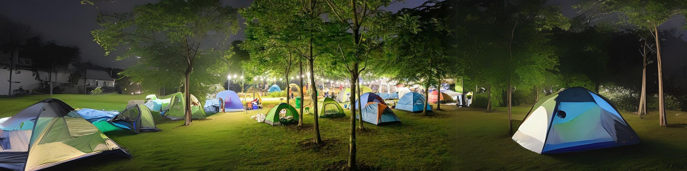

Địa điểm tham quan & Vui chơi
Hà Nội có nhiều điểm tham quan lịch sử, công viên, khu ẩm thực và phố đi bộ.
Phố cổ
Phố cổ Hà Nội với 36 phố phường là nơi hội tụ ẩm thực, đồ thủ công và trải nghiệm truyền thống.
Nhà hát Lớn
Nhà hát Lớn là nơi tổ chức các sự kiện văn hoá, hòa nhạc, biểu diễn quy mô lớn — biểu tượng kiến trúc Pháp ở Hà Nội.

Công viên & Không gian xanh
Công viên Thủ Lệ, Yên Sở và các không gian đô thị mới là nơi lý tưởng cho gia đình, lễ hội và vận động ngoài trời.
